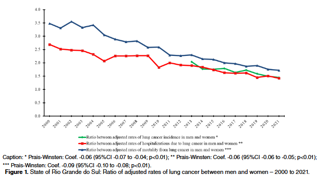

Lung cancer trend in the state of Rio Grande do Sul, Brazil: ecological study, 2000–2021

Resumo em Português
Introdução: O câncer de pulmão é um dos tipos mais comuns de câncer em todo o mundo, representando 11,4% de todos os casos incidentes em 2020, além de constituir a principal causa de morte por câncer, com aproximadamente 1,8 milhão de óbitos. No Brasil, destaca-se entre as neoplasias de maior impacto em saúde pública, especialmente devido à sua elevada mortalidade. Estudos apontam importantes variações regionais na incidência, com destaque para estados como São Paulo, Minas Gerais e Rio Grande do Sul. Além disso, evidências indicam diferenças relevantes na incidência e na mortalidade por câncer de pulmão entre homens e mulheres, possivelmente associadas a padrões históricos de exposição a fatores de risco, como o tabagismo. Nesse contexto, a análise de tendências temporais desses indicadores é fundamental para compreender a dinâmica da doença e subsidiar políticas públicas de controle.
Objetivo: Analisar a tendência temporal da taxa de incidência de internações e de mortalidade por câncer de pulmão no Estado do Rio Grande do Sul segundo o sexo, entre 2000 e 2021.
Métodos: Tratou-se de um estudo ecológico de série temporal, com dados obtidos em bases nacionais de domínio público. As taxas foram padronizadas por idade, pelo método direto, e a análise de tendência foi realizada por Regressão de Prais-Winsten.
Resultados: Os dados revelaram estabilidade nas taxas de incidência e de internações por câncer de pulmão em homens e no total, e tendência crescente em mulheres. Encontrou-se tendência decrescente na mortalidade por câncer de pulmão em homens e no total, e tendência crescente da mortalidade em mulheres. Verificou-se tendência decrescente na razão de todos os coeficientes de câncer de pulmão entre indivíduos do sexo masculino e feminino.
Conclusões: Demonstrou-se estabilidade nas taxas de câncer de pulmão, com redução na mortalidade total, embora persistam disparidades de gênero. A redução do tabagismo, especialmente entre os homens, pode ser um fator contribuinte. Contudo, apesar das taxas de câncer de pulmão mais elevadas em homens, é preocupante seu evidente crescimento em mulheres.